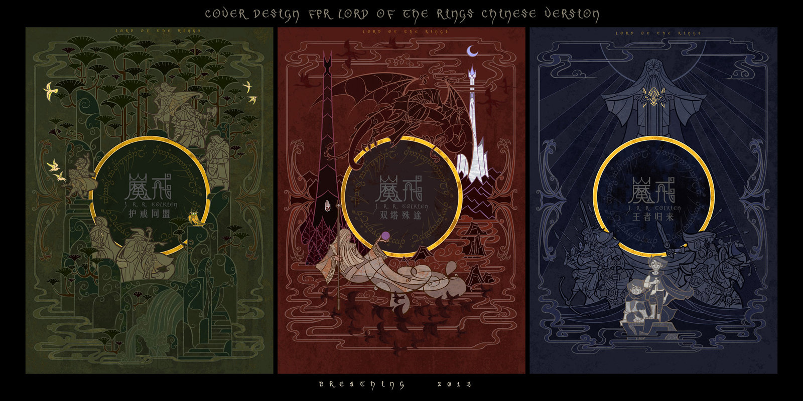

Jian Guo - Lord of the Rings Covers

These are gorgeous designs submitted for a contest for Chinese versions of The Lord of the Rings. There are so many nice touches. Looking around Jian's other work, these seem slightly out of style for him, yet still close enough. I'd probably buy a nice trio of these if they were prints, even if only available in Chinese.
Previously: You are not a storyteller - Stefan Sagmeister Next: Digital Ocean